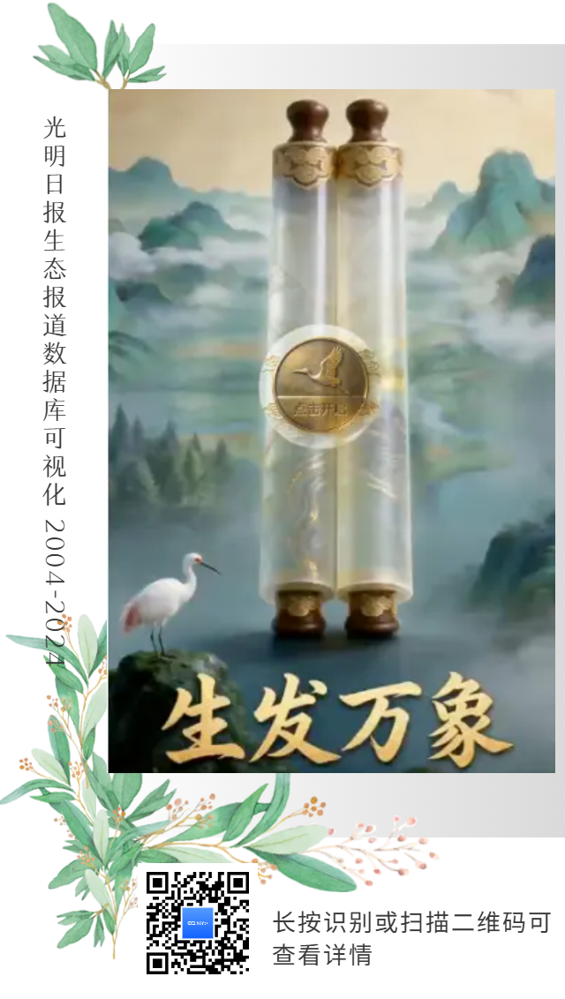

01
关于我
新闻学在读，在学校官媒担任编辑，同时研究 数据新闻、AIGC 与前沿技术。
在学校新闻中心参与过人物专访、赛事记录、文化节气策划等各类报道。 热衷于亲身参与、大胆尝试，对世界保持好奇与乐观。 有新闻理想，相信一篇好内容、一次好传播，都能为社会带来一点改变。
- 西南民族大学 新闻学 · 本科 · 新闻传播学院（成都） 2025.09 — 2029.06
02
作品 Works
公众号推文
- 01 全员上岸！一间宿舍的四种逐梦姿态 阅读 3万+ ↗
- 02 国际前沿｜国际人道工作者在关注什么？2026 日内瓦 HNPW 回顾 国际视野 ↗
- 03 曾素君：坚持用真诚传递真善美 人物特稿 ↗
- 04 点赞！民大学子再登《人民日报》 人民日报转载 ↗
- 05 迎新春·话年俗｜小年启程，民大人的五重年味正在派送 节气创意 ↗
- 06 不止突破，这里有民大青春该有的模"Young"！ 青春叙事 ↗
- 07 2026 年 4·23 世界读书日｜"一骑绝尘·跨界阅读赛" 创意活动 ↗
- 08 春天在民大，"她"在春天里 主题策划 ↗
- 09 春和景明，阅启新程｜图书馆邀你共赴书香之约 活动推广 ↗
- 10 开考！ 校园报道 ↗
项目作品

03
专业技能
内容策划
- 新媒体选题策划与热点追踪，独立撰写品牌策划案、新闻专题及营销软文
- 微信公众号后台 + 135 编辑器 / 秀米排版与内容发布
视觉设计
- Photoshop 图像处理与视觉设计
- PR / 剪映 基础剪辑与特效制作
数据分析
- 多源数据采集、清洗与结构化处理
- 数据可视化呈现，具备数据新闻叙事思维
AI 应用
- 提示词工程，AIGC 工具生成图文音视频素材
- HTML / CSS / JS 搭建 H5 交互页面与网页
- 智能体开发，工作流自动化
办公协作
- Office 文档排版、数据报表与演示
- 多任务并行、团队沟通与项目协调
04
经历
-
2025.10 — 2026.06
西南民族大学新闻中心 微信团队 · 文字编辑
参与学校及图书馆公众号选题策划，累计撰写并发表原创推文 20+ 篇。策划《全员上岸！一间宿舍的四种逐梦姿态》专题，实现单篇阅读量 3 万+，显著提升账号活跃度与转发率。
-
2025.10 — 2026.06
西南民族大学创新创业联合会 创新中心 · 干事
参与 5 场规模超 200 人的双创赛事，协调场地、物料及人员分工；完成 100+ 个创新创业项目的材料审核。
-
2026.05 — 2026.06
成都合众公益发展中心 传播志愿者
负责公益机构公众号内容运维，通过优化标题与封面图，使单篇推文平均阅读量提升 20%，扩大公益项目社会影响力。
-
2025.09 — 2026.06
班级宣传委员
策划并执行 3 场主题团日活动，活动参与度 98%；负责 2 场校级班会的影像记录与新闻稿撰写，稿件被学院官方公众号录用。
Get in touch